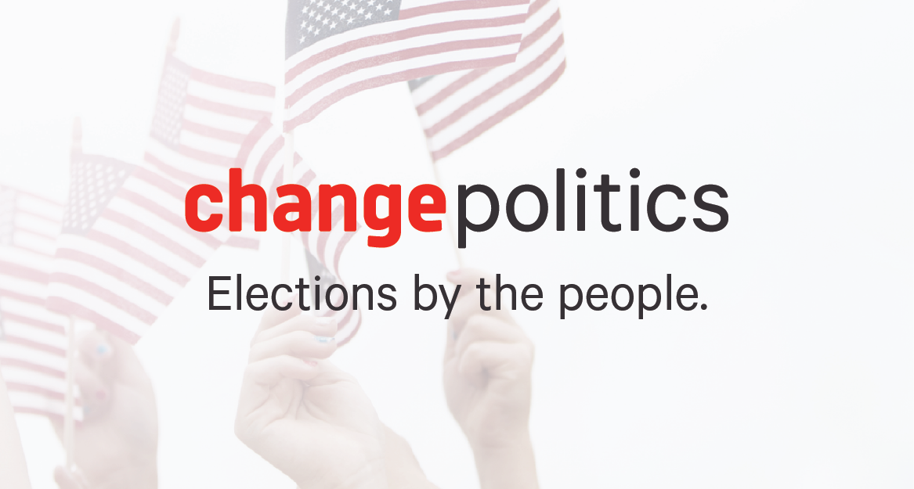

Full-Stack Developer and Political Consultant
- Living at the intersection of Technology and Politics
Portfolio
-
Votify
I need to work on this
-
B.S Detect
-
HytchHyker
- 
Change Politics
<
Testimonials
Dane is an extraordinarily hard worker that brings an unrivaled passion and tenacity to any project he takes on.
Dane's political experience and dedication make him a strong asset to any team he is a part of
Dane's digital skills make him invaluable in today's political arena